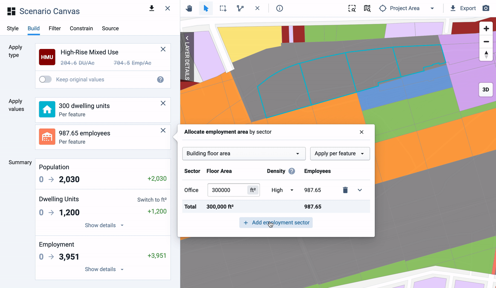

UrbanFootprint Analyst
At UrbanFootprint, we’ve built our software platform with not only the most comprehensive, nationwide land-use database available, but also the most versatile features in scenario planning.
Implimented Feature
Custom Painting
The direct painting feature gives users the power and flexibility to override and directly specify residential and employment attributes of UrbanFootprint Building and Place Types.
Learn more about the feature

Implimented Feature
Parcel Gridding
Parcel Gridding enables users to split existing parcels to redevelop urban sites or plan entirely new neighborhoods. This new feature allows you to set the grid size and position the grid so that it aligns with the surrounding parcels and street network.
Learn more about the feature